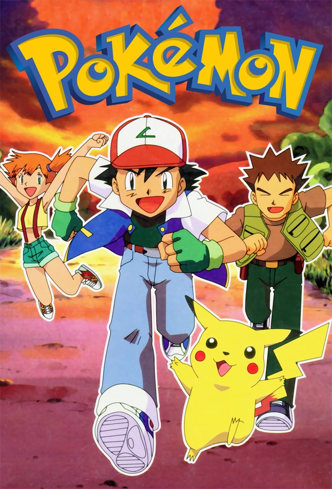
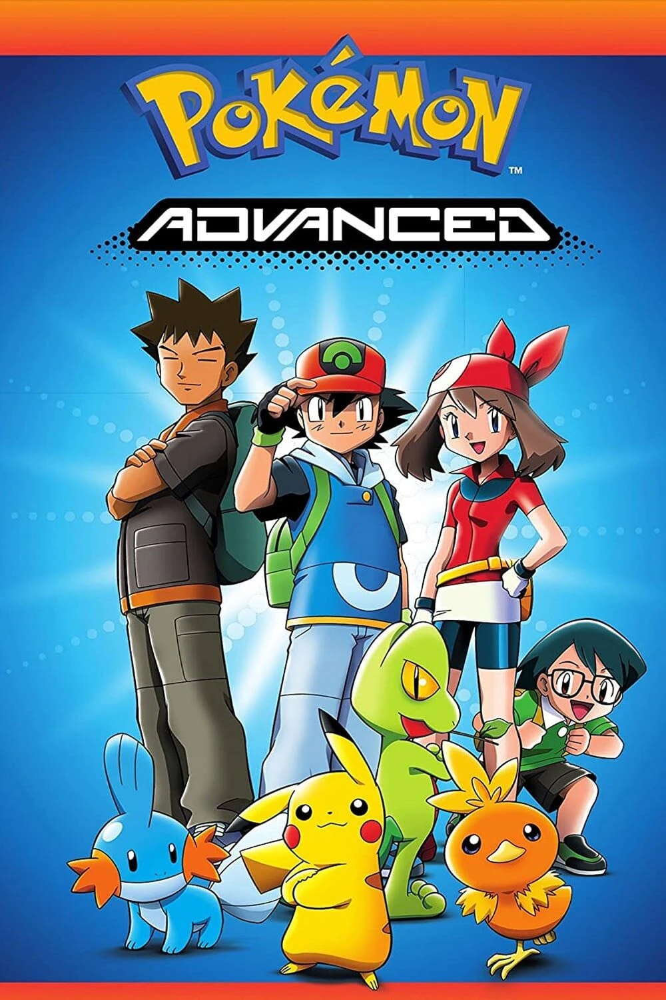
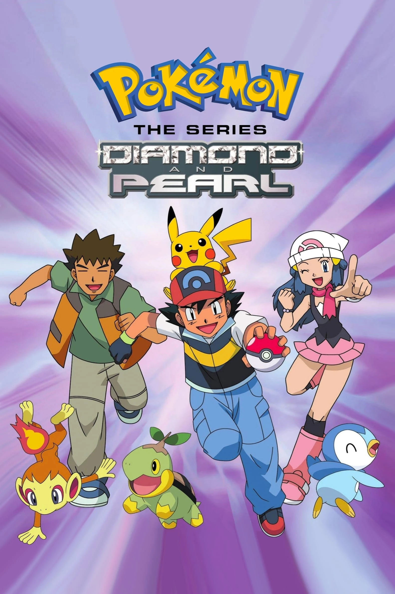
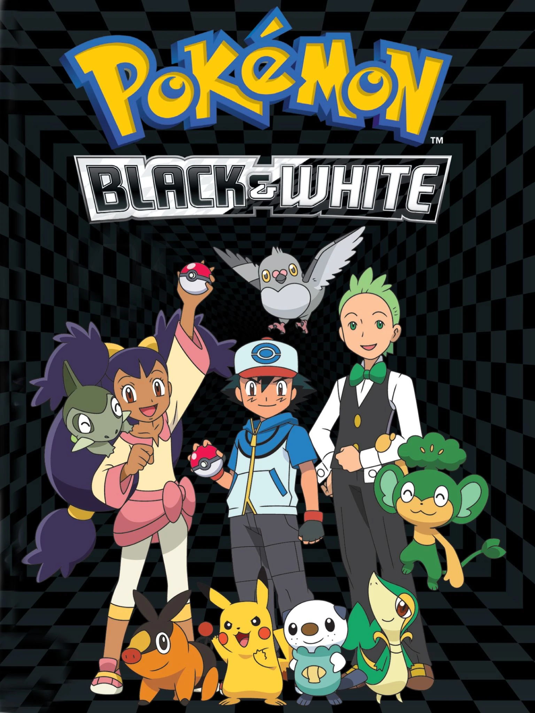
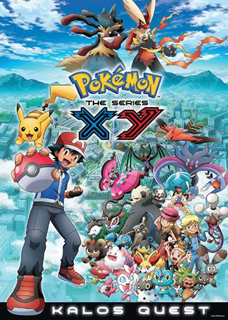

| Titulo | Resumo | Datos tecnicos | Trailers |
|---|---|---|---|
| Pokémon: Serie Original |
"Pokémon: Serie Original" sigue las aventuras de Ash Ketchum y su fiel compañero Pikachu mientras viajan por la región de Kanto, desafiando gimnasios y enfrentándose a la malvada organización Team Rocket en su búsqueda por convertirse en un Maestro Pokémon. |
|
 |
| Pokémon: Advanced Generation |
"Pokémon: Advanced Generation" sigue las nuevas aventuras de Ash en la región de Hoenn, donde desafía gimnasios, participa en concursos Pokémon y se enfrenta a la malvada organización Team Magma y Team Aqua. |
|
 |
| Pokémon: Diamante y Perla |
"Pokémon: Diamante y Perla" sigue las aventuras de Ash, Brock y Dawn mientras exploran la región de Sinnoh, enfrentándose a desafíos de gimnasios, participando en concursos Pokémon y enfrentándose a la organización malvada Team Galactic." |
|
 |
| Pokémon: Negro y Blanco |
"Pokémon: Negro y Blanco" sigue las aventuras de Ash en la región de Teselia, donde se encuentra con nuevos amigos y Pokémon, desafía gimnasios y se enfrenta a la organización malvada Team Plasma mientras busca convertirse en un Maestro Pokémon. |
|
 |
| Pokémon: XY |
"Pokémon: XY" sigue a Ash y sus amigos en la región de Kalos, donde enfrentan nuevos desafíos, participan en combates Pokémon y luchan contra el equipo malvado, el Team Flare, mientras persiguen sus sueños de convertirse en Maestros Pokémon. |
|
 |